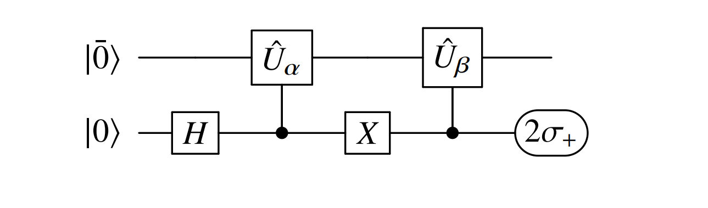

Multi-reference Quantum Krylov Algorithm - \(H_2\) Molecule¶
The multireference selected quantum Krylov (MRSQK) algorithm is defined in this paper and was developed as a low-cost alternative to quantum phase estimation. This tutorial will demonstrate how this algorithm can be implemented in CUDA-Q and accelerated using multiple GPUs. The CUDA-Q Hadamard test tutorial might provide helpful background information for understanding this tutorial.
The algorithm works by preparing an initial state, and then defining this state in a smaller subspace constructed with a basis that corresponds to Trotter steps of the initial state. This subspace can be diagonalized to produce an approximate energy for the system without variational optimization of any parameters.
In the example below, the initial guess is the ground state of the diagonalized Hamiltonian for demonstration purposes. In practice one could use a number of heuristics to prepare the ground state such as Hartree Fock or CISD. A very promising ground state preparation method which can leverage quantum computers is the linear combination of unitaries (LCU). LCU would allow for the state preparation to occur completely on the quantum computer and avoid storing an inputting the exponentially large state vector.
Regardless of the method used for state preparation, the procedure begins by selecting a \(d\) dimensional basis of reference states \({\Phi_0 \cdots \Phi_d}\) where each is a linear combination of slater determinants.
From this, a non-orthogonal Krylov Space \(\mathcal{K} = \{\psi_{0} \cdots \psi_{N}\}\) is constructed by applying a family of \(s\) unitary operators on each of the \(d\) reference states resulting in \(d*s = N\) elements in the Krylov space where,
Therefore, the general quantum state that we originally set out to describe is
The energy of this state can be obtained by solving the generalized eigenvalue problem
Where the elements of the overlap and Hamiltonian matrix are
These matrix elements are computed using a quantum computer and the Hadamard test with a circuit shown below for the case of the overlap matrix elements (The Hamiltonian matrix elements circuit would include controlled application of the Hamiltonian in the circuit). Once the matrices are constructed, the diagonalization is performed classically to produce an estimate for the ground state in question.

The \(2\sigma_+\) term refers to measurement of the expectation value of this circuit with the \(X+iY\) operator.
Setup¶
This cell installs the necessary packages. This application can be parallelized, so please uncomment the mgpu specification below if you would like to run on more than one GPU.
[ ]:
import cudaq
import numpy as np
import scipy
!pip install openfermion==1.6.1 pyscf==2.6.2 openfermionpyscf==0.5 -q
# Single-node, single gpu
cudaq.set_target("nvidia")
multi_gpu = False
# Single-node, multi-GPU
#cudaq.set_target("nvidia", option='mqpu,fp64')
#multi_gpu = True
The molecule is defined below and its Hamiltonian is extracted as a matrix. The matrix is diagonalized to produce the ground state. The corresponding state vector will be used as the initial state to ensure good results for this demonstration.
[ ]:
# Define H2 molecule
geometry = [('H', (0.0, 0.0, 0.0)), ('H', (0.0, 0.0, 0.7474))]
hamiltonian, data = cudaq.chemistry.create_molecular_hamiltonian(
geometry, 'sto-3g', 1, 0)
electron_count = data.n_electrons
qubits_num = 2 * data.n_orbitals
# Diagonalize Hamiltonian
spin_ham_matrix = hamiltonian.to_matrix()
e, c = np.linalg.eig(spin_ham_matrix)
# Find the ground state energy and the corresponding eigenvector
print('Ground state energy (classical simulation)= ', np.min(e), ', index= ',
np.argmin(e))
min_indices = np.argmin(e)
# Eigenvector can be used to initialize the qubits
vec = c[:, min_indices]
The functions below take the original Hamiltonian defined above, and strip it into a list of Pauli words and a list of coefficients which will be uses later.
[ ]:
# Collect coefficients from a spin operator so they can pass to a kernel
def termCoefficients(ham: cudaq.SpinOperator) -> list[complex]:
result = []
ham.for_each_term(lambda term: result.append(term.get_coefficient()))
return result
# Collect Pauli words from a spin operator so they can pass to a kernel
def termWords(ham: cudaq.SpinOperator) -> list[str]:
result = []
ham.for_each_term(lambda term: result.append(term.to_string(False)))
return result
#Build the lists of coefficients and Pauli Words from H2 Hamiltonian
coefficient = termCoefficients(hamiltonian)
pauli_string = termWords(hamiltonian)
print(coefficient)
print(pauli_string)
In the case of this example, the unitary operators that build the Krylov subspace are first-order Trotter operations at different time steps. The performance here could potentially be improved by increasing the size of the time step, using a higher order Trotter approximation, or using other sorts of approximations. The CUDA-Q kernels below define the unitary operations that construct the \(\psi\) basis. Each receives the target qubits, the time step, and components of the Hamiltonian.
[4]:
# Applies Unitary operation corresponding to Um
@cudaq.kernel
def U_m(qubits: cudaq.qview, dt: float, coefficients: list[complex],
words: list[cudaq.pauli_word]):
# Compute U_m = exp(-i m dt H)
for i in range(len(coefficients)):
exp_pauli(dt * coefficients[i].real, qubits, words[i])
# Applies Unitary operation corresponding to Un
@cudaq.kernel
def U_n(qubits: cudaq.qview, dt: float, coefficients: list[complex],
words: list[cudaq.pauli_word]):
# Compute U_n = exp(-i n dt H)
for i in range(len(coefficients)):
exp_pauli(dt * coefficients[i].real, qubits, words[i])
# Applies the gate operations for a Hamiltonian Pauli Word
@cudaq.kernel
def apply_pauli(qubits: cudaq.qview, word: list[int]):
# Add H (Hamiltonian operator)
for i in range(len(word)):
if word[i] == 1:
x(qubits[i])
if word[i] == 2:
y(qubits[i])
if word[i] == 3:
z(qubits[i])
# Performs Hadamard test circuit which determines matrix elements of S and H of subspace
@cudaq.kernel
def qfd_kernel(dt_alpha: float, dt_beta: float, coefficients: list[complex],
words: list[cudaq.pauli_word], word_list: list[int],
vec: list[complex]):
ancilla = cudaq.qubit()
qreg = cudaq.qvector(vec)
h(ancilla)
x(ancilla)
cudaq.control(U_m, ancilla, qreg, dt_alpha, coefficients, words)
x(ancilla)
cudaq.control(apply_pauli, ancilla, qreg, word_list)
cudaq.control(U_n, ancilla, qreg, dt_beta, coefficients, words)
The auxillary function below takes a Pauli word, and converts it to a list of integers which informs applications of this word to a circuit with the apply_pauli kernel.
[5]:
def pauli_str(pauli_word, qubits_num):
my_list = []
for i in range(qubits_num):
if str(pauli_word[i]) == 'I':
my_list.append(0)
if str(pauli_word[i]) == 'X':
my_list.append(1)
if str(pauli_word[i]) == 'Y':
my_list.append(2)
if str(pauli_word[i]) == 'Z':
my_list.append(3)
return my_list
The spin operators necessary for the Hadamard test are defined below.
[6]:
# Define the spin-op x for real component and y for the imaginary component.
x_0 = cudaq.spin.x(0)
y_0 = cudaq.spin.y(0)
Finally, the time step for the unitary operations that build the Krylov space is defined as well as the dimension of the Krylov space.
[7]:
#Define parameters for the quantum Krylov space
dt = 0.5
# Dimension of the Krylov space
m_qfd = 4
Computing the matrix elements¶
The cell below computes the overlap matrix. This can be done in serial or in parallel, depending on the multi_gpu specification. First, an operator is built to apply the identity to the overlap matrix circuit when apply_pauli is called. Next, the wf_overlap array is constructed which will hold the matrix elements.
Next, a pair of nested loops, iterate over the time steps defined by the dimension of the subspace. Each m,n combination corresponds to computation of an off-diagonal matrix element of the overlap matrix \(S\) using the Hadamard test. This is accomplished by calling the CUDA-Q observe function with the X and Y operators, along with the time steps, the components of the Hamiltonian matrix, and the initial state vector vec.
The observe function broadcasts over the two provided operators \(X\) and \(Y\) and returns a list of results. The expectation function returns the expectation values which are summed and stored in the matrix.
The multi-gpu case completes the same steps, expect for observe_async is used. This allows for the \(X\) and \(Y\) observables to be evaluated at the same time on two different simulated QPUs. In this case, the results are stored in lists corresponding to the real an imaginary parts, and then accessed later with the get command to build \(S\)
[8]:
## Single GPU:
if not multi_gpu:
# Add identity operator to compute overlap of basis
observe_op = 1.0
for m in range(qubits_num):
observe_op *= cudaq.spin.i(m)
identity_word = observe_op.to_string(False)
pauli_list = pauli_str(identity_word, qubits_num)
# Empty overlap matrix S
wf_overlap = np.zeros((m_qfd, m_qfd), dtype=complex)
# Loop to solve for S matrix elements
for m in range(m_qfd):
dt_m = dt * m
for n in range(m, m_qfd):
dt_n = dt * n
results = cudaq.observe(qfd_kernel, [x_0, y_0], dt_m, dt_n,
coefficient, pauli_string, pauli_list, vec)
temp = [result.expectation() for result in results]
wf_overlap[m, n] = temp[0] + temp[1] * 1j
if n != m:
wf_overlap[n, m] = np.conj(wf_overlap[m, n])
else:
## Multi-GPU
# Add identity operator to compute overlap of basis
observe_op = 1.0
for m in range(qubits_num):
observe_op *= cudaq.spin.i(m)
identity_word = observe_op.to_string(False)
pauli_list = pauli_str(identity_word, qubits_num)
# Empty overlap matrix S
wf_overlap = np.zeros((m_qfd, m_qfd), dtype=complex)
# Empty lists to store results
collect_overlap_real = []
collect_overlap_img = []
# Loop to compute matrix elements of S
count = 0
for m in range(m_qfd):
dt_m = dt * m
for n in range(m, m_qfd):
dt_n = dt * n
# The count variable determines which (simulated) QPU the computation is sent to
# The results are stored in a list corresponding to the real and imaginary parts
count_id = count % 2
collect_overlap_real.append(
cudaq.observe_async(qfd_kernel,
x_0,
dt_m,
dt_n,
coefficient,
pauli_string,
pauli_list,
vec,
qpu_id=count_id))
collect_overlap_img.append(
cudaq.observe_async(qfd_kernel,
y_0,
dt_m,
dt_n,
coefficient,
pauli_string,
pauli_list,
vec,
qpu_id=count_id + 2))
count += 1
tot_dim = 0
# A second loop takes the lists of results and, using `get`, populates the matrix elements
for n in range(m_qfd):
for m in range(n, m_qfd):
observe_result = collect_overlap_real[tot_dim].get()
real_val = observe_result.expectation()
observe_result = collect_overlap_img[tot_dim].get()
img_val = observe_result.expectation()
wf_overlap[m, n] = real_val + img_val * 1j
if n != m:
wf_overlap[n, m] = np.conj(wf_overlap[m, n])
tot_dim += 1
The Hamiltonian matrix elements are computed in the same way, except this time the Hamiltonian is applied as part of the circuit. This is accomplished with the extra for loop, which iterates through the terms in the Hamiltonian, computing an expectation value for each one and then summing the results to produce one matrix element.
[9]:
## Single GPU:
if not multi_gpu:
# Empty H
ham_matrx = np.zeros((m_qfd, m_qfd), dtype=complex)
# Loops over H matrix terms
for m in range(m_qfd):
dt_m = dt * m
for n in range(m, m_qfd):
dt_n = dt * n
# 2 entry array that stores real and imaginary part of matrix element
tot_e = np.zeros(2)
# Loops over the terms in the Hamiltonian, computing expectation values
for coef, word in zip(coefficient, pauli_string):
#print(coef,word)
pauli_list = pauli_str(word, qubits_num)
#print(pauli_list)
results = cudaq.observe(qfd_kernel, [x_0, y_0], dt_m, dt_n,
coefficient, pauli_string, pauli_list,
vec)
temp = [result.expectation() for result in results]
# Multiplies result by coefficient corresponding to Pauli Word
temp[0] = coef.real * temp[0]
temp[1] = coef.imag * temp[1]
# Accumulates results for each Pauli Word
tot_e[0] += temp[0]
tot_e[1] += temp[1]
# Sums real and imaginary totals to specify Hamiltonian entry
ham_matrx[m, n] = tot_e[0] + tot_e[1] * 1j
if n != m:
ham_matrx[n, m] = np.conj(ham_matrx[m, n])
else:
## Multi-GPU
# Empty H
ham_matrx = np.zeros((m_qfd, m_qfd), dtype=complex)
# Loops over H matrix terms
for m in range(m_qfd):
dt_m = dt * m
for n in range(m, m_qfd):
dt_n = dt * n
#List storing results from real and imaginary circuit evaluations for each Pauli word
ham_matrix_real = []
ham_matrix_imag = []
# Loop to asynchronously compute real and imaginary parts for each Pauli word on two GPUs
count = 0
tot_e = np.zeros(2)
for coef, word in zip(coefficient, pauli_string):
count_id = count % 2
#print(coef,word)
pauli_list = pauli_str(word, qubits_num)
#print(pauli_list)
ham_matrix_real.append(
cudaq.observe_async(qfd_kernel,
x_0,
dt_m,
dt_n,
coefficient,
pauli_string,
pauli_list,
vec,
qpu_id=count_id))
ham_matrix_imag.append(
cudaq.observe_async(qfd_kernel,
y_0,
dt_m,
dt_n,
coefficient,
pauli_string,
pauli_list,
vec,
qpu_id=count_id + 2))
count += 1
# Loops through coefficients to sum the real and imaginary parts of H matrix element
i = 0
for coef in coefficient:
observe_result = ham_matrix_real[i].get()
real_val = observe_result.expectation()
observe_result = ham_matrix_imag[i].get()
img_val = observe_result.expectation()
tot_e[0] += real_val * coef.real
tot_e[1] += img_val * coef.imag
i += 1
# Enter final H matrix element
ham_matrx[m, n] = tot_e[0] + tot_e[1] * 1j
if n != m:
ham_matrx[n, m] = np.conj(ham_matrx[m, n])
Determining the ground state energy of the Subspace¶
The final step is to solve the generalized eigenvaulue problem with the overlap and Hamiltonian matrices constructed using the quantum computer. The procedure begins by diagonalizing \(S\) with the transform
The eigenvectors \(v\) and eigenvalues \(s\) are used to construct a new matrix \(X'\)
The \(X'\) matrix diagonalizes \(H\)
Using the eigenvectors of \(H'\), (\(^{\frac{1}{2}}C\)), the original eigenvectors to the problem can be found by left multiplying by \(S^{\frac{-1}{2}}C\)
[10]:
def eig(H, s):
#Solver for generalized eigenvalue problem
# HC = SCE
THRESHOLD = 1e-20
s_diag, u = scipy.linalg.eig(s)
s_prime = []
for sii in s_diag:
if np.imag(sii) > 1e-7:
raise ValueError(
"S may not be hermitian, large imag. eval component.")
if np.real(sii) > THRESHOLD:
s_prime.append(np.real(sii))
X_prime = np.zeros((len(s_diag), len(s_prime)), dtype=complex)
for i in range(len(s_diag)):
for j in range(len(s_prime)):
X_prime[i][j] = u[i][j] / np.sqrt(s_prime[j])
H_prime = (((X_prime.conjugate()).transpose()).dot(H)).dot(X_prime)
e_prime, C_prime = scipy.linalg.eig(H_prime)
C = X_prime.dot(C_prime)
return e_prime, C
[ ]:
eigen_value, eigen_vect = eig(ham_matrx[0:m_qfd, 0:m_qfd], wf_overlap[0:m_qfd,
0:m_qfd])
print('Energy from QFD:')
print(np.min(eigen_value))